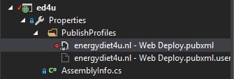

Issues and solutions#
Bundling and minifying#
Most of the information comes from two articles: How to bundle CSS and JS and Bundling and minification in Umbraco.
- Added
App_Startfolder - Created
BundleConfig.csclass with bundles for JavaScript and CSS files - Added
BundleTable.EnableOptimizations = true;inBundleConfig.csto be able to test bundling and minification. - At the same time, added
<compilation debug="true" />in<system.web>section ofWeb.config,<compilation debug="false" />inweb.Release.config.
Important
EnableOptimizations takes precedence of compilation debug value.
- It is also important to make sure that
bundlesare included in theumbracoReservedPaths:
<appSettings> ... <add key="umbracoReservedPaths" value="~/umbraco,~/install/,~/bundles/" /> ... </appSettings>
Web Deployment - Could not find part of the path#
Question#
Error during web deploy
Could not open Source file: Could not find a part of the path ‘J:\U\Ed4u\Ed4u\App_Plugins\LeBlender\Web.config;\App_Plugins\LeBlender\Web.config’.
Answer#
Find the deployment profile energydiet4u.nl - Web Deploy.pubxml

and add the following key to the PropertyGroup section:
<AutoParameterizationWebConfigConnectionStrings>False</AutoParameterizationWebConfigConnectionStrings>
Web Deployment - Group policy prevents Roslyn’s csc.exe from running#
Question#
Website runtime error after deployment to GoDaddy:

Answer#
Since the .NET 4.5 version, Roslyn compilation is the default way of compiling. This means if you create any web application either Web Forms or MVC using .NET 4.5 you get this Roslyn csc.exe compilation pre-installed in your project.
- Uninstall
Microsoft.CodeDOM.Providers.DotNetCompilerPlatformNuGet package, rebuild and redeploy the website - Delete the corresponding .dll’s from the
bindirectory
NOTE This will be probably necessary to do every time Umbraco is upgraded.